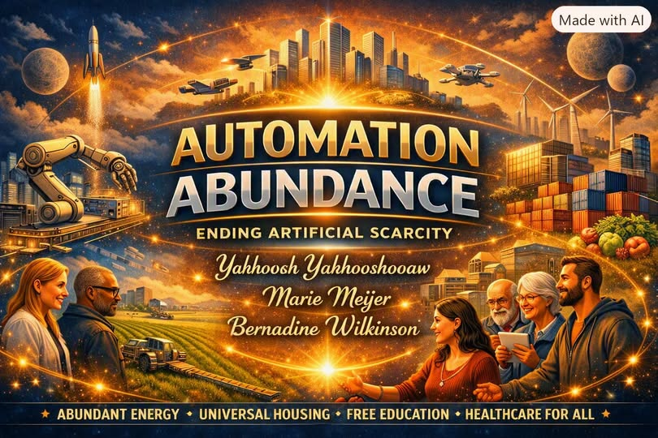

Article #103
A New American Monetary System: Replacing the Federal Reserve with a National Central Bank
A proposal for a publicly owned National Central Bank, preserving private banking and monetary-policy independence.
Read full article →A proposal for a publicly owned National Central Bank, preserving private banking and monetary-policy independence.
Read full article →
Comparing universal coverage, household costs, administrative efficiency, prescription prices and economic effects.
Read full article →
How artificial intelligence, robotics and organized abundance could transform the economic foundations of society.
Read full article →